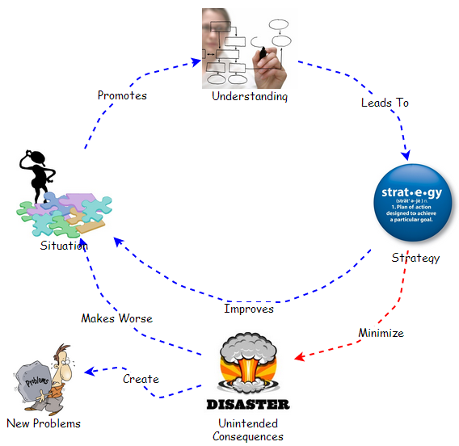

Why is it that as we approach our goals they seem to be more difficult to achieve? Why is it that things progressing so well seem sooner or later to turn sour? And when things turn sour, how is it that they seem to do so in such a rapid fashion? Why is it that almost every problem we solve seems simply to leads to a whole new set of problems? Why is it that the problems we thought we solved yesterday seem to come back to haunt us in a few weeks or months? Why is it that a group of individuals each doing what seems so sensible manages to create something that none of them want, i.e. bureaucracy? Why it is that no matter how much money one makes it never seems to be enough? Why is it that cooperative partnerships that should produce tremendous results so often end with the partners becoming adversaries?
The list of questions is rather endless and our normal pursuit from a cause and effect perspective is to try to find where the fault lies and who to blame. It is more appropriate to realize that people always, always, always do exactly what makes the most amount of sense to them in the context of the moment based on their current understanding. Thus, our actions are based on our beliefs and the future is a result of our actions though many of our beliefs are based on incorrect assumptions and conclusions. What implications do you think this has for our future? It has been said that the majority of today's problems are the direct result of yesterday's solutions. There is a famous quote from Pogo, "We have met the enemy and he is us" And Steven Covey commented that true pro-activity begins when one starts to understand the extent to which they contribute to the situation. All of this should provide a sense that if we want things to be better tomorrow we need to get better, though what does that mean?
Whether we’re considering a problem, a situation, an objective, or a desire, the underlying essence of the manner in which we proceed is the essentially the same. We take action intended to change what is into what we think it should be, tough the results are typically as described in the first paragraph. Might the typical results imply that we could use a better way?
A systems perspective enables us to understand the foundation of situations. A systems perspective enables one to progress beyond simply seeing cause and effect events, to seeing patterns of interaction and the underlying structures which are responsible for the patterns and events. And once we understand the real foundations for the situations we experience, we are in a much better position to respond. Respond in a manner where we interact with the underlying structure in ways which will enhance or improve the situation without making the situation worse or creating new problems elsewhere.

Figure 1. The Future We Create
Given a situation that we consider warrants attention we first need to develop an understanding. An understanding of events, patterns of behavior and underlying structure. An understanding that will enable us to develop a strategy which improves the situation while minimizing unintended consequences. Our desire to minimize unintended consequences is based on experience which has shown that unintended consequences typically make the initial situation worse or end up creating new problems that we ourselves or others have to figure out how to deal with. A well crafted strategy, well executed, can serve to minimize unintended consequences. As the total elimination of unintended consequences is likely to be impossible a well crafted strategy should also contain provisions for identifying and dealing with unintended consequences in the future.
Over time we have woven the fabric of our existence ever tighter, and with ever more rapid interactions. And, when we do not understand the complexity we have created, we feel helpless, and become victims of what we do not understand. It is our hope that Beyond Connecting the Dots enables us to develop a better understanding of the world around us, why this understanding is so important to us in our daily lives, and how we can all can benefit from the understanding. Once we embrace the complexity we have created, and develop a systems perspective, we no longer need to be victims, for we can use our understanding to change our actions and thereby our future.
Gene Bellinger
August 2013